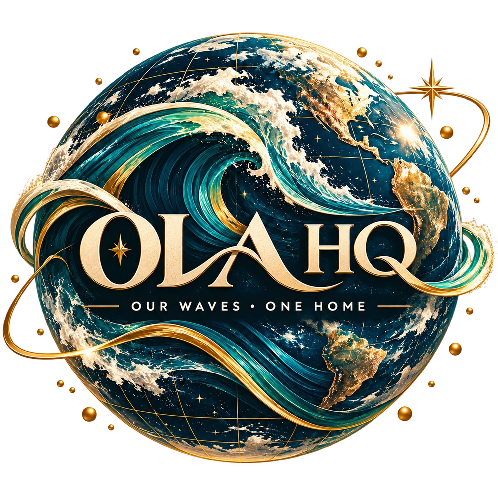
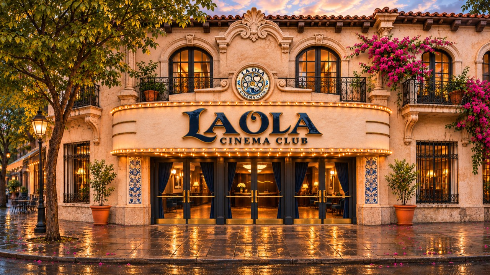
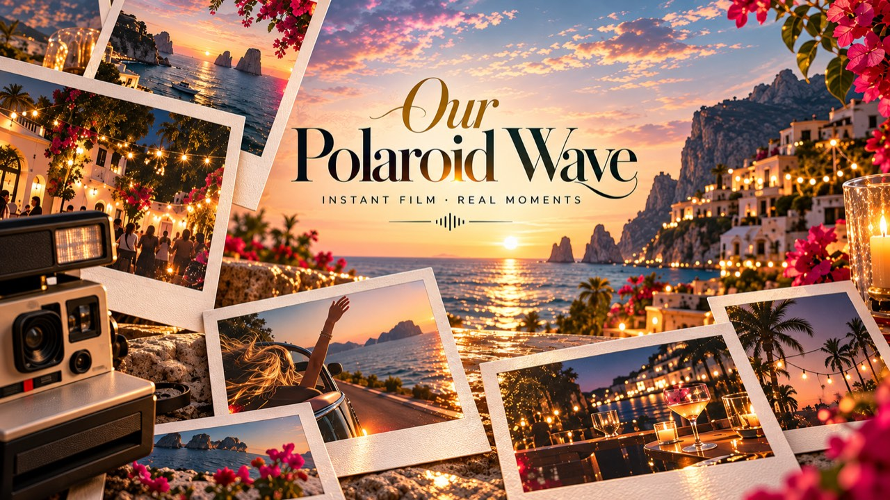
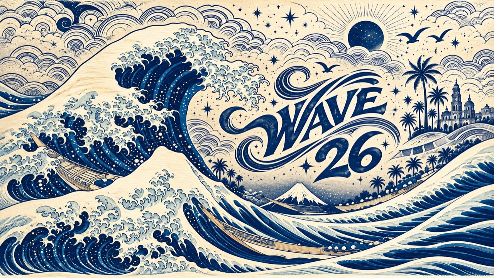
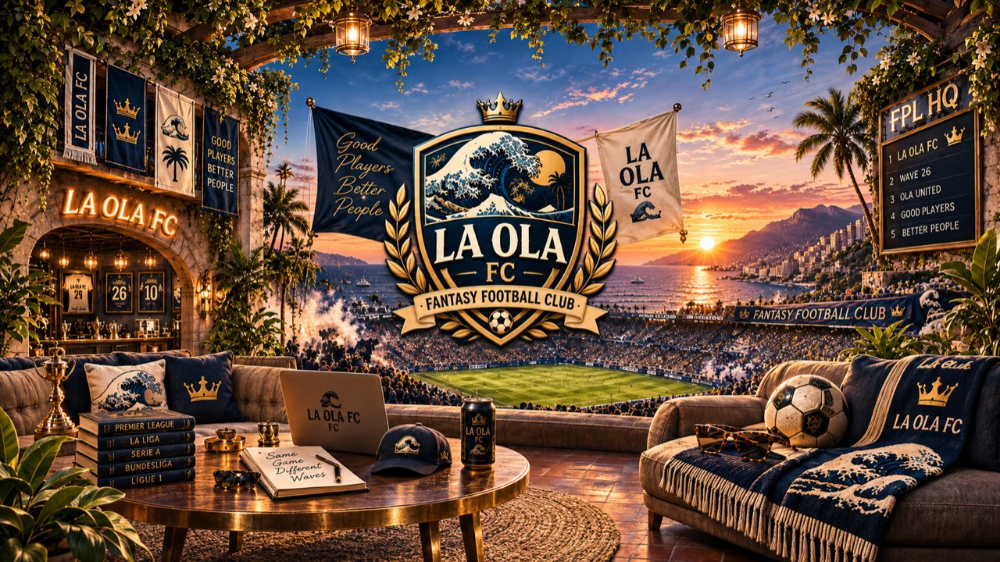
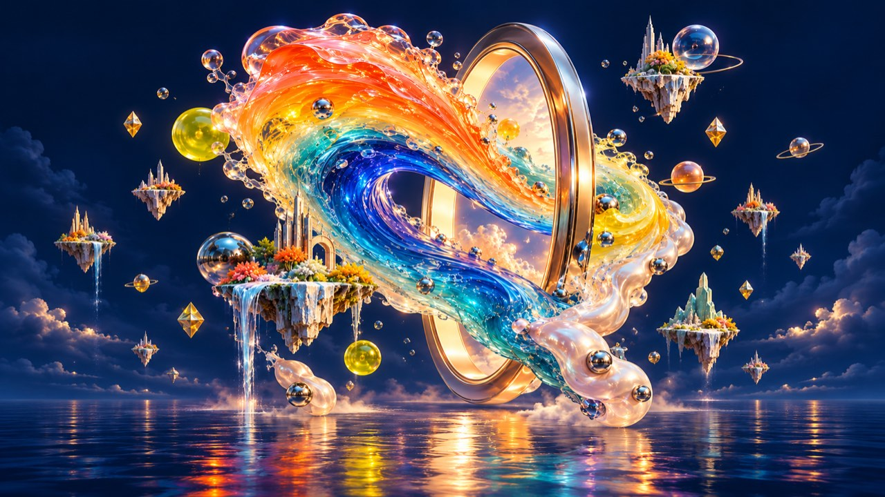
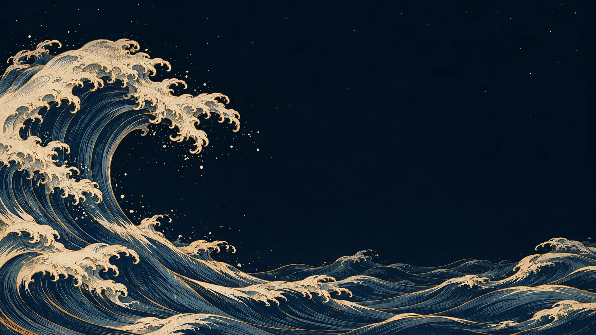

WELCOME TO OUR WORLD
Our Waves,
One Home.
A public home for the things we make, the memories we keep, and the worlds they become. Choose a wave and step inside.
Find your waveWaves
Each its own world.La Ola de Amor
Brianna + Jonathan. A journey through love, places, and the memories along the way.
Enter world ↗
La Ola Cinema Club
Two perspectives. One cinema club. Reviews, genre colors, Club Stamps, and movies we imagine.
Enter the Club
Our Polaroid Wave
Instant film, real moments. Six collections of faces, nights, places, and life in motion.
Explore the portfolio ↗
Wave 26
OLA. Albums, songs, and experiments at the intersection of feeling and sound.
Enter the music world ↗
FPL Wave
The fantasy club. Current season, League HQ, squad, kits, complete publications, and films.
Enter the club ↗
Simulation Wave
A creative playground of illustrated projects, surreal artwork, and synthetic worlds. Follow an idea somewhere unexpected.
Enter the playground ↗THERE’S MORE TO EXPLORE
Follow the Deeper Waves.
A little curiosity goes a long way. Find your next world in GDB Wave, Arsenal, Offbrand, Willpwr, Wu Wei, and Capybara.
Come on in
Around the home
A workbench, a museum, and a way back home.OLA HQ App
Our worlds, one home. Explore the universe and add the app to your phone.
Open the app ↗Tools
A small creative workbench: discover your Wave, set a timer, plan movies, and explore our film favorites.
Open Tools ↗Analytics · Host Studio
Private visitor insights for every OLA World, door, and app experience. Host sign-in required.
Open analytics ↗Archive / Version Museum
The story of how our home grew, and the editions that came before.
Visit the museum ↗Publish / Access
How the worlds connect, and where sign-in is needed.
About public access ↗